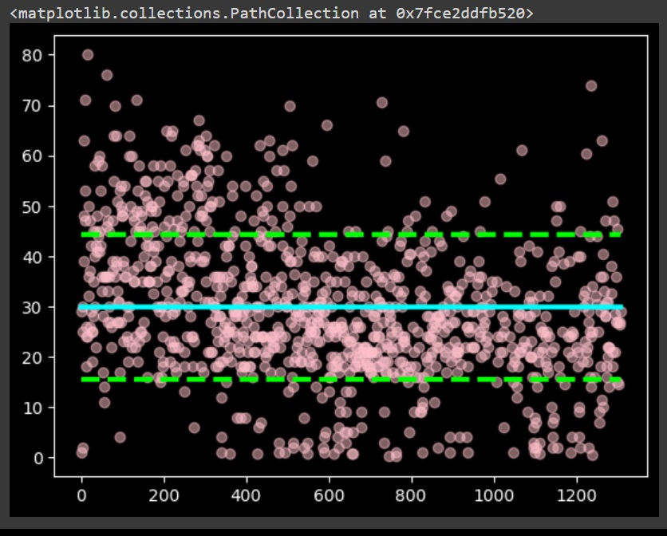
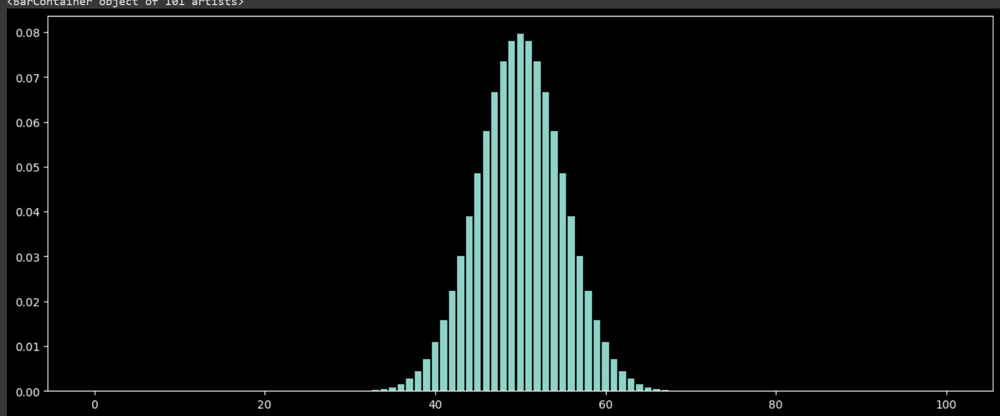
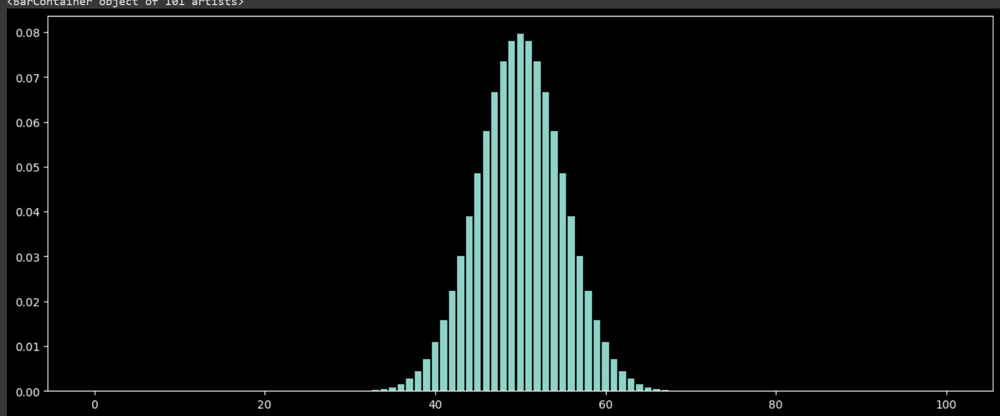

-
Ciência de Dados
Em Ciência de Dados, iniciamos a linguagem de programação Python, utilizando a plataforma Google Colab e a biblioteca Pandas. Com isso, importamos uma biblioteca de dados do GitHub chamada Titanic, onde estão contidas todas as informações dos passageiros do navio naufragado Titanic. Em seguida, começamos a aplicar o processo de amostragem para realizar algumas análises estatísticas. Utilizando alguns conceitos de amostragem, fizemos um exercício com os dados dos alunos da nossa classe de ADS.
Inferências com base em informações que tinhamos de uma amostra inclui a estimativa de parâmetros desconhecidos, como a média ou a proporção de uma população, e a realização de testes de hipóteses para validar ou rejeitar afirmações sobre os dados.
Ja em Derivadas utilizamos ela como uma ferramenta fundamental nas áreas da matemática e ciências aplicadas, como física, engenharia e economia, onde é usada para modelar e analisar o comportamento de funções e quantidades variáveis.
Conteúdos Abordados Amostragem Tendência Central Medidas de Dispersão Teste de Hipóterse Inferência Derivadas Slideshow com barra de rolagem  
